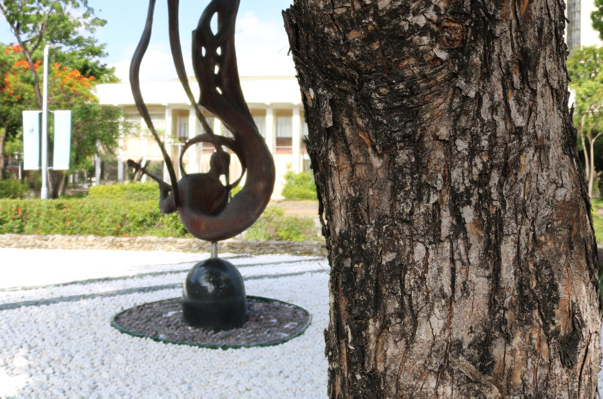
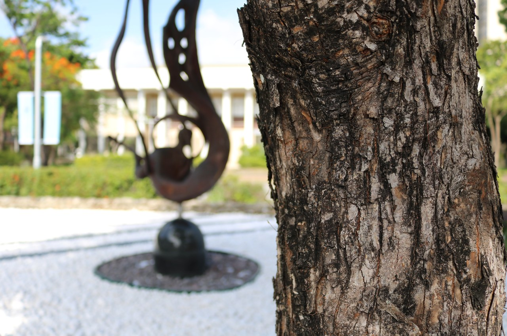
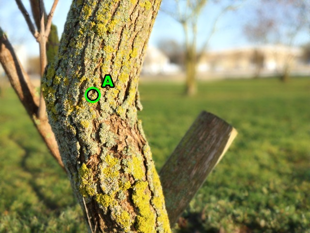
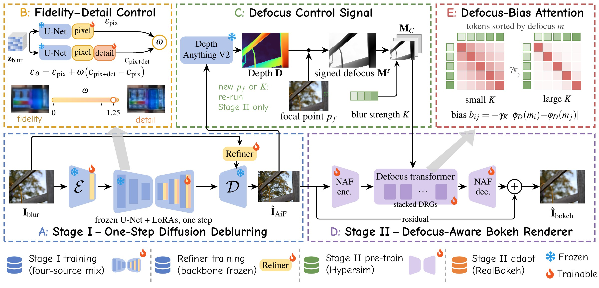

FlashReFocus
Interactive Image Refocusing in Seconds
FlashReFocus makes single-image refocusing interactive: click anywhere in a photograph to move the focal plane and turn the blur strength like an aperture ring. Diffusion runs once, to restore the all-in-focus image; every edit after that is one pass of a lightweight renderer, so in-focus content stays the same from edit to edit.


Drag to compare. Our own capture, restored in one diffusion step (ω = 1.25, decoder refiner).
Real time
Ten edits while GenRefocus is 5% into its first
Both methods start on the same photograph. Each FlashReFocus result appears after its measured time; GenRefocus needs 370.65 s for its first refocus.
Played in real time at 1536×1536 on one NVIDIA RTX PRO 6000. The scripted session was timed in an earlier run (2.50 s for the first refocus and 0.47 s per further edit); the paper reports 2.45 s and 0.46 s. Frames are model outputs shown at a long side of 1024.
Video
Watch the video
Results
Defocused input and restored image, side by side
Stage I recovers the all-in-focus image that every later edit reuses. Drag the divider on any card; the left side is the input and the right side is FlashReFocus.
Inputs at a long side of 1280, restored in one diffusion step with ω = 1.25 and the decoder refiner.
Interactive
One restored image, every focal edit
Each frame below is one edit rendered from the same restored image (3CReal and RealBokeh inputs, long side 1024). Move the focal plane, or hold it and open the aperture.
With the focal point fixed, the strength behaves like an aperture: the background blur grows while the subject stays sharp. The renderer is trained for strengths 0 to 1; values from 1 to 2 extrapolate past training. Strength controllability (LVCorr) is 0.857 on LFDOF and 0.839 on 3CReal, against 0.690 and 0.666 for GenRefocus and 0.672 and 0.672 for AnyBokeh (both on the first 20 scenes of each set).
Portraits
Unsplash portraits with a shallow depth of field. Stage I restores the out-of-focus background once; every view after that is one renderer pass on the same restored image, at strength 0.8.

Strength as an aperture
With the focus on the face, the background blur grows with the strength while the face stays sharp.

Consistency
In-focus content stays put across edits
Both methods receive the same inputs and the same eight focal points, and our strength is set so that the background blur matches. FlashReFocus keeps in-focus regions close to the restored image; GenRefocus regenerates the whole image at every edit.
Left FlashReFocus, right GenRefocus, on two 3CReal scenes and one RealBokeh scene; the 3CReal labels show the measured seconds per edit at a long side of 1024.
| Method | In-focus PSNR ↑ | In-focus LPIPS ↓ | Consistency PSNR ↑ | Seconds per edit ↓ |
|---|---|---|---|---|
| 3CReal | ||||
| GenRefocus | 28.96 | 0.155 | 43.84 | 77 |
| FlashReFocus | 44.44 | 0.036 | 49.91 | 0.10 |
| RealBokeh test | ||||
| GenRefocus | 25.38 | 0.186 | 40.19 | – |
| FlashReFocus | 38.81 | 0.048 | 49.31 | – |
In-focus fidelity compares each result with the all-in-focus input near the focal depth; consistency compares consecutive edits where the expected blur does not change.
Beyond one lens
The defocus map is the control
The renderer reads an explicit depth-derived defocus map, so editing that map produces blur fields that a single physical lens cannot.
Tilt-shift
Replacing the depth given to the renderer with a vertical ramp keeps a horizontal band sharp regardless of scene depth, the miniature look of a tilted lens.


Two focal planes
Each pixel is blurred by its distance to the nearer of two planes, so two subjects at different depths stay sharp while the space around them blurs.



Method
Restore once, render every edit
Recovering an all-in-focus image from a defocused photograph is highly ill-posed and benefits from a generative prior, whereas rendering blur is largely determined by depth and the focal plane. FlashReFocus therefore splits refocusing into two stages with very different costs.
- Stage I adapts a diffusion prior to a single step with dual LoRAs: the weight ω blends a pixel pass and a detail pass to balance fidelity and perceptual quality, and a lightweight decoder refiner restores fine structure such as edges and text.
- Stage II turns monocular depth and the selected focal point into an explicit defocus map and renders each edit as a residual to the fixed reconstruction, in one feed-forward pass of a 1.3M-parameter network.
- Defocus-bias attention favors tokens of similar blur magnitude, so blur changes sharply at depth boundaries and focused content is left as restored.

(a) Single-stage diffusion and (b) two-stage generative refocusing run a large diffusion model for every focal edit. (c) FlashReFocus restores the all-in-focus image once and renders each new focal setting with a lightweight defocus-aware network. (d) Seconds at 1536×1536 for every stage of a refocusing session.

Abstract
Single-image refocusing changes the focal plane and depth of field of a photograph after capture. Users compare focal choices on one photograph, so content stability across edits matters alongside quality and speed. Recent generative methods rerun large diffusion models for every edit, even when they first restore an all-in-focus image, so content can change inconsistently between edits. Yet only this restoration is highly ill-posed and benefits from a generative prior, whereas rendering blur is largely determined by depth and the focal plane. We therefore propose FlashReFocus, which runs diffusion once per photograph and renders each edit with a lightweight network. A one-step diffusion deblurrer with a decoder refiner recovers fine detail efficiently while balancing fidelity and perceptual quality. The renderer uses an explicit defocus map for control and defocus-bias attention to promote information exchange between tokens with similar blur magnitudes. Because every edit reuses the same reconstruction, in-focus content stays consistent across edits, and editing the map enables tilt-shift and two-plane effects. We further collect 3CReal, a benchmark of 89 pairs from three camera–lens systems, to evaluate generalization to unseen optics. For zero-shot bokeh rendering on EBB! Val176 and 3CReal, FlashReFocus leads the evaluated methods in fidelity and perceptual quality. At 1536×1536, a complete refocus takes 2.45 s and each subsequent edit 0.46 s on one RTX PRO 6000.
Numbers
Benchmarks
Excerpts of the paper's tables. The full tables compare seven deblurring and nine bokeh-rendering methods and add RealBokeh validation, LFDOF and MODEST.
Seconds per refocus
1536×1536 on one NVIDIA RTX PRO 6000, after warm-up. † Renders directly from the input, without restoration.
Refocusing cost
| Method | Params (B) | First (s) | New focus (s) | TFLOPs first | TFLOPs new | Mem. (GiB) |
|---|---|---|---|---|---|---|
| DiffCamera | 12.33 | 136.35 | 136.35 | 19,363 | 19,363 | 28.37 |
| GenRefocus | 18.30 | 370.65 | 217.32 | 42,061 | 24,763 | 42.82 |
| AnyBokeh | 12.09 | 191.38 | 183.38 | 25,368 | 24,240 | 24.93 |
| BokehDiff† | 3.83 | – | 3.43 | – | 73.4 | 11.82 |
| MagicBokeh† | 1.73 | – | 6.13 | – | 113 | 5.29 |
| FlashReFocus | 1.70 | 2.45 | 0.46 | 113 | 0.85 | 16.84 |
First covers restoration and the first rendering; new focus is each further edit on the same image.
Zero-shot bokeh rendering
| Method | PSNR ↑ | SSIM ↑ | MS-SSIM ↑ | LPIPS ↓ | DISTS ↓ | CLIP-I ↑ | LVCorr ↑ |
|---|---|---|---|---|---|---|---|
| EBB! Val176 | |||||||
| BokehMe | 24.52 | 0.8929 | 0.9007 | 0.2020 | 0.1235 | 0.9696 | 0.7879 |
| BokehDiff | 23.87 | 0.8568 | 0.8745 | 0.2137 | 0.1182 | 0.9636 | 0.8281 |
| GenRefocus | 23.80 | 0.8680 | 0.8815 | 0.2025 | 0.1111 | 0.9644 | 0.6898 |
| MagicBokeh | 23.14 | 0.8441 | 0.8629 | 0.2398 | 0.1445 | 0.9331 | 0.7987 |
| AnyBokeh | 22.81 | 0.8611 | 0.8902 | 0.2291 | 0.1308 | 0.9416 | 0.6720 |
| FlashReFocus | 24.52 | 0.8917 | 0.9032 | 0.1805 | 0.1039 | 0.9725 | 0.8570 |
| 3CReal | |||||||
| BokehMe | 27.58 | 0.8835 | 0.9342 | 0.2471 | 0.1569 | 0.9761 | 0.7768 |
| BokehDiff | 25.80 | 0.8115 | 0.8610 | 0.3112 | 0.1589 | 0.9566 | 0.7972 |
| GenRefocus | 26.38 | 0.8528 | 0.9218 | 0.2426 | 0.1493 | 0.9715 | 0.6658 |
| MagicBokeh | 25.64 | 0.8329 | 0.8957 | 0.2543 | 0.1553 | 0.9430 | 0.7589 |
| AnyBokeh | 24.74 | 0.8388 | 0.9196 | 0.2298 | 0.1378 | 0.9543 | 0.6719 |
| FlashReFocus | 27.98 | 0.8855 | 0.9375 | 0.2178 | 0.1368 | 0.9807 | 0.8391 |
Every method receives the same all-in-focus input and focal point. 3CReal contains 89 small- and large-aperture pairs from three camera–lens systems excluded from renderer training. LVCorr in the EBB! block is measured on LFDOF; for GenRefocus and AnyBokeh, which need a full diffusion pass per strength, it uses the first 20 scenes of each set. Bold marks the best among all nine methods in the paper; DeepLens, not shown here, has the highest LVCorr (0.887 and 0.875).
Defocus deblurring
| Method | DPDD | RealDOF | ||||
|---|---|---|---|---|---|---|
| PSNR ↑ | LPIPS ↓ | DISTS ↓ | PSNR ↑ | LPIPS ↓ | DISTS ↓ | |
| Restormer | 25.98 | 0.1762 | 0.1204 | 25.08 | 0.2863 | 0.1573 |
| GenRefocus | 23.93 | 0.1686 | 0.0843 | 23.49 | 0.2447 | 0.1148 |
| FlashReFocus (ω = 1) | 24.61 | 0.1718 | 0.0980 | 23.70 | 0.2527 | 0.1227 |
| FlashReFocus + refiner (ω = 1.25) | 25.37 | 0.1557 | 0.0870 | 24.25 | 0.2437 | 0.1187 |
Bold marks the best among all nine entries in the paper's deblurring table; the highest PSNR belongs to regression restorers (ViTDeblur 26.12 on DPDD, DRBNet 25.74 on RealDOF), which can over-smooth fine detail.
FAQ
Questions
Why run diffusion only once?
Recovering detail that the lens never captured sharply is ill-posed, so it benefits from a generative prior. Rendering blur for a chosen focal plane is largely determined by depth and the circle of confusion, so a compact feed-forward network suffices. FlashReFocus spends diffusion on the first problem only and reuses its result for every edit.
Does the subject change between edits?
Every edit is rendered as a residual to the same restored image, so in-focus content stays close to it. On three 3CReal scenes with matched background blur, in-focus PSNR against the restored image is 44.4 dB for FlashReFocus and 29.0 dB for GenRefocus, which regenerates the image at every edit.
How fast is it, and on what hardware?
At 1536×1536 on one NVIDIA RTX PRO 6000, a complete refocus (restoration plus the first edit) takes 2.45 s with 16.84 GiB peak memory, and each further edit takes 0.46 s because the restored image and depth are reused.
What can I control?
The focal point, the blur strength, and the defocus map itself. The renderer is trained for strengths 0 to 1; larger values extrapolate. Editing the map gives effects beyond one physical lens, such as tilt-shift and two focal planes.
What is 3CReal?
A benchmark of 89 small- and large-aperture pairs captured with three camera–lens systems that are excluded from renderer training, used to test generalization to unseen optics. It is available on Hugging Face.
Can I try it?
Yes. The Hugging Face demo lets you upload a photograph, click a focal point and set the strength; code is on GitHub.
Citation
BibTeX
@misc{cheng2026flashrefocus,
title = {FlashReFocus: Interactive Image Refocusing in Seconds},
author = {Cheng, Ching-Heng and Lee, Chia-Ming and Chang, Ming-Ching and
Li, Xin and Hsu, Chih-Chung},
year = {2026},
eprint = {2610.23297},
archivePrefix = {arXiv},
primaryClass = {cs.CV},
url = {https://arxiv.org/abs/2610.23297}
}